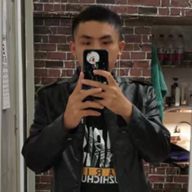

家乡
父亲作为我们家的顶梁柱和经济来源一直默默付出,可谓劳苦功高，他从没有过抱怨，他总是为家里默默着付出，不求回报。平时的话他喜欢看看直播，看别人下象棋，休息时也喜欢到处开车去玩。体验大自然的美妙。他经常关注国内外形势，经常看新闻。他很顾家，平时经常去超市买家人喜欢的水果，他对我不严格，我完全就是放养长大的，学习、生活、他管得很少，所以说我的童年还是很快乐的，让我的自主独立能力得到了很大培养。
印象中母亲一直伴我成长，初、高中我寄宿于学校，也只有周末能回家，她在上班,所以说家里只有我一个人，自己买东西、煮饭，家庭环境让我在生活上变得独立。她平时没事做的话喜欢刷刷视频，她很喜欢小孩子，只要姐姐带着孩子两个孩子回家,她会和她的两个外孙玩得很开心，俩孩子也非常喜欢和她一起玩。她是一个比较温柔的人，说话一点也没有什么气场压迫比较随和，在邻里内外人缘很好。
姐姐比我大六岁，她对我很好，也照顾家。她高中没读完就辍学了,然后有缘分的遇见了姐哥，最终她们俩也是走到了最后。 她和姐哥结婚四五年了，很恩爱，姐姐有两个小孩。每当逢年过节的时候我姐和姐哥都会带着她们家的俩可爱回家避暑。
姐哥很努力，能力越大，责任也越大，现在正在为向往的生活努力。成年人的生活没有容易二字，但未来也只能靠自己拼搏、努力。一起加油,共勉！
我有两个外侄，大孩子叫田婧辰，小孩子叫田俊熙，两个小孩子很可爱，大孩子很活泼，小孩子有点内向，我从他那里看见了小时候的自己,她们俩经常打跳，虽说偶尔有矛盾，但姐姐和弟弟两个关系很好,会相互分享玩具...作为你们的舅舅，我当然是希望你们能健健康康地成长。开开心心过每一天。在我面前永远都是一个小孩子，爱你们的舅舅。
周增坤 江湖人称坤哥，狂荡不羁、潇洒自在，我非常欣赏坤哥的性格。向你学习。(敬礼)现今在河南闯荡大学。
张耀 比我小两个月，我们一起长大，小时候一起玩耍，游泳，陪着我过了一个快乐的童年。现今已潇潇洒洒闯荡生活。
豆雨蓬 我表哥，只比我大18天，一起长大，小时候每到周末假日，都是在一起玩耍。现今已潇潇洒洒闯荡生活。
董黎波 我的一个老铁，初中我们经常一起偷偷去黑网吧上网打打英雄联盟，喜欢逗同班女同学。吉他弹得很好。
田子沁 我的吃货老铁，大大咧咧、直白的性格我喜欢，在桂林上大学，只有寒暑假才能吃彭水洋芋花、酸辣粉咯。
王月 小妹妹，喜欢打打游戏、追追剧什么的，对人很好，很大方。呆萌可耐。思想简简单单。愿归来人少年。
艾玲 My brother，老铁的那种。一个大美人。比我成熟很多，就像大人一般人生经验丰富，我有些不懂的事会请教她。
李云霞 我的老弟，做事一丝不苟，非常认真负责，很欣赏她的行为精神，向她学习这一点！在海南读大学(羡慕可以坐飞机)
何旺 旺兄，彭水彭于晏，大大方方、洒脱，喜欢打篮球的boy,也要记得暑假和我一起游到乌江对面哦。

龚杭 家里排行老二，我称他为猪二娃，喜交友，是一个逗比，我经常和他互相开玩笑，正正经经的逗比。
徐畔 情感经历丰富，性格随和，不羁，经常在我们寝室传授给我们一些不懂经验，是我们寝室的一个老师。
谭金耀 人称“社会我耀哥”性格大方，直白，脾气也直，霸道，说事情直指明，不拐弯抹角。在新疆闯荡大学。
余星星 四年的同学，也是一个逗比，常带给我们班欢乐，让我在高中增添了很多的色彩，现今也在河南闯荡大学，道同相谋。
张豪 豪哥，小学玩的很好的兄弟，经常在家里面玩cf，羡慕不来他的高度，已经高到一米九了，和他一起时压力还是蛮大的。
豆霆锋 比我小两岁，邻居，小时候我、豆雨蓬、张耀几个小伙伴经常一起玩耍，上天揽月，下海擒蛟。我们几个人童年生活都很丰富多彩。
刘坤林 我喊他老刘，关系很好的兄弟，人很老实实在。现今在离我只有五百米的大学读书(可以经常一起玩),加油！共勉。
这些都是我帅气与可爱集于一身的好朋友们，他们教会了我很多关于生活上与学 习上的道理、人生哲理。我们也共同努力过 ，都在朝着未来的生活而奋斗，理想而努力，愿你们出走半生，归来仍是少年。不管你们身在何处，我都不会忘记我们以前美好的时光，望君与彼共铭。共奋理想与生活。